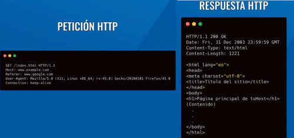
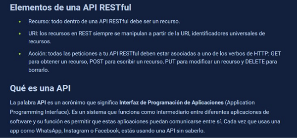
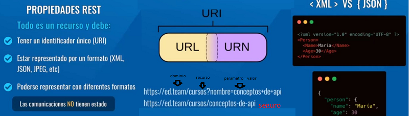

| Referencia | Descripcion | Ejemplo | ||
|---|---|---|---|---|
| Deficiones |
Aplication programmin interface : interfaces de progrtmacion de aplicaciones API: conjunto de funciones, metodos, subrutinas que ofrece o expone un software para que interactue o consuma el mismo u otro diferente Protocolo es el conjunto de reglas en las que se van comunicar dos Entidades. Entre computaoras es atravez del modelo TCP/IP HTTPes un Protocolo de comunicacion entre aplicaciones basado en el intercambio de texto. El servido devuelve los datos en codigo HTML |
Metodos o Verbos(acciones) HTTP GET: obtener un recurso desde el cliente POST solicitud desde el cliente hacia el servidor para Crear PUT: en este caso podemos actualizar todos los propiedades del recurso PATCH:actualizar parcialmente un recurso HEADER:consultar la existencia de un recurso DELETE:elimina un recurso OPTION:este solo funciona en lado del navagador: valida o permite el acceso hacia oro dominio,
realiza una distincion. |
||
| REST: acronimo Representational State Transfer. transferencia de estado Representational nota:mientras HTTP es una transferencia de archivos en REST es tranferencia de recursos |
https =s subido al servidor/ viaja con cifrado segruro Cookies y Tokens: cadena de caracteres que se genera al logiarnos y son devueltos en cada peticion y deben ser enviados en el Request porque representa los permisos para ciertas soicitudes, pueden ser generadas por la aplicacion, navegador, o por el servidor. estas cookies tienen atributos que contienen variables |
 | ||
| REST definicion general: estilo de aquitetura de software enfocado en el intercambio de recursos basados en HTPP RESTful es una API que esta diseñada alrededror de los conceptos de REST: Recurso, URI, ACCION |
Como Funciona una REST es un conjunto de principios que definen la forma de realizar las operaciones CRUD. En la arquiterura Cliente servidor actuan de forma independiente, siempre y cuando la interfaz sea la misma al procesar una solicitud y una respuesta. el servidor almacena la informacion y la pone a disposicion del usuario, mientas que el usuario toma la informacion y la muestra al usuario o la utiliza para realizar posteriores peticiones de mas informacion. |  | ||
| definiciones terminos |
URI: Uniform Resource Locator (Localizador de Recursos Uniforme) URN: El Nombre de Recurso Uniforme o URN (Uniform Resource Name) CONTENT TYPES: representa el formato en el que el servidor esta devolvierdo ela informacion para que el cliente o navegador sepa como procesarla |
 | ||